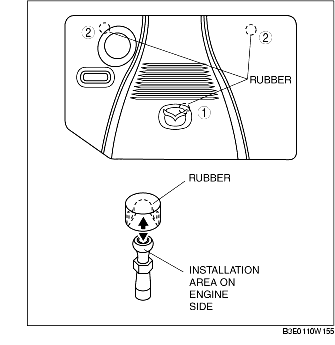

PLUG HOLE PLATE REMOVAL/INSTALLATION [LF]
B3E011000149W01
1. Remove the plug hole plate in the order indicated in the figure.
-
Note
-
• Lift off and remove the plug hole plate from the installation areas as shown in the figure.

2. Install the plug hole plate in the reverse order of removal.